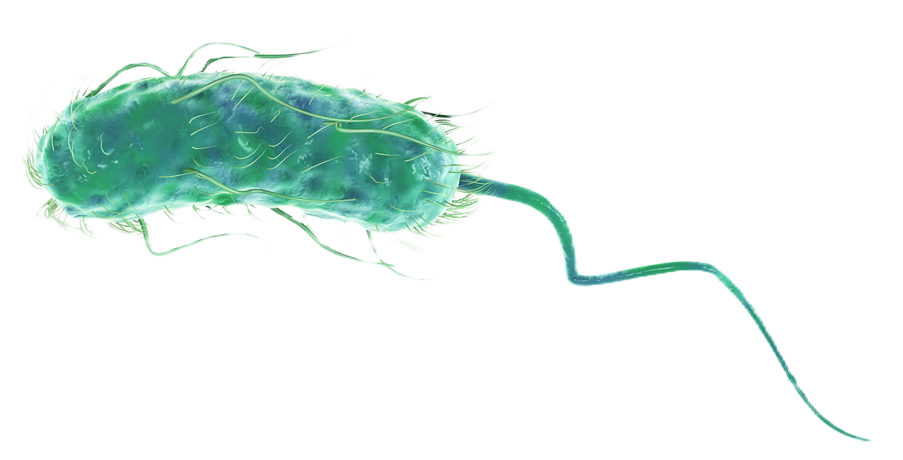
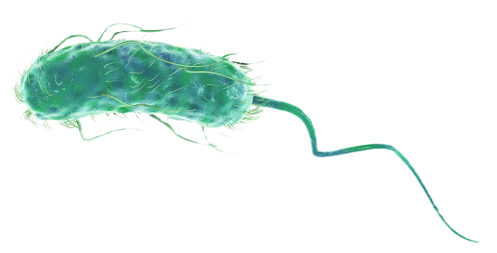

Descripción microbiológica
Escherichia coli es un bacilo gramnegativo recto de 1-3 µm de longitud, con flagelos peritricos (en algunas cepas) que le confieren motilidad. Presenta una pared celular con una fina capa de peptidoglicano y una membrana externa de lipopolisacárido (LPS). Es anaerobio facultativo, oxidasa-negativo y fermenta lactosa (clave para su identificación en agar MacConkey). Las colonias son rosadas (por fermentación de lactosa) en agar MacConkey y grises en agar sangre tras 24 horas a 37°C. Algunas cepas producen biofilm mediante fimbrias tipo 1 y polisacáridos extracelulares.
Características distintivas
- Tinción: Gram-negativo, no esporulado, algunas cepas con cápsula (antígeno K).
- Metabolismo: Fermenta glucosa, lactosa y manitol (agar EMB muestra brillo metálico).
- Resistencias: Cepas ESBL (productoras de betalactamasas) y carbapenemasas (KPC).
- Factores de virulencia: Diversos según patotipo (toxinas Shiga, adhesinas, LPS).
Ecología y transmisión
Habita comensal en el intestino humano y animal (108 UFC/g heces). Sobrevive semanas en agua y superficies húmedas. Se transmite por vía fecal-oral (agua/ alimentos contaminados, manos), siendo causa frecuente de infecciones comunitarias y nosocomiales. Patotipos como STEC (E. coli productor de toxina Shiga) tienen reservorios bovinos. Factores de riesgo incluyen consumo de carne mal cocida, lácteos no pasteurizados y viajes a zonas endémicas ("diarrea del viajero").
Factores ambientales
- Supervivencia: Resiste meses en agua a 4°C, pero sensible a desecación.
- pH óptimo: 6.0-7.0, pero tolera rangos de 4.4-9.0.
- Biocidas: Sensible a hipoclorito (0.1%), glutaraldehído al 2%.
Mecanismos de patogenicidad
Su virulencia varía según patotipo:
| Factor | Mecanismo | Efecto clínico |
|---|---|---|
| Toxina Shiga (Stx) | Inhibe síntesis proteica | Síndrome urémico hemolítico |
| LPS (endotoxina) | Activa TLR4/macrófagos | Shock séptico |
| Fimbrias P (pap) | Adhesión a uroepitelio | Pielonefritis |
Enfermedades clínicas
- Infecciones intestinales: Diarrea acuosa (ETEC), colitis hemorrágica (STEC), disentería (EIEC).
- Infecciones extraintestinales: ITU (80% de cistitis no complicadas), sepsis, meningitis neonatal.
- Síndromes toxínicos: SUH (trombocitopenia, anemia hemolítica, fallo renal).
- Resistencia: Cepas MDR (resistencia a fluoroquinolonas, cefalosporinas 3° gen).
Diagnóstico y tratamiento
Métodos diagnósticos incluyen:
- Cultivo selectivo (agar MacConkey, agar EMB) + pruebas bioquímicas (IMViC: ++--).
- PCR para genes de virulencia (stx, eae, aggR según patotipo).
- Antibiograma con detección de betalactamasas (prueba de doble disco).
Opciones terapéuticas según patotipo:
- ITU no complicadas: Nitrofurantoína, fosfomicina (evitar fluoroquinolonas).
- Infecciones invasivas: Carbapenémicos para cepas ESBL+, aminoglucósidos.
- SUH: Soporte renal (evitar antibióticos en STEC por riesgo de liberación de Stx).
Prevención y control
- Higiene: Lavado de manos, cocción de carne (>70°C), pasteurización de lácteos.
- Agua segura: Cloración (0.5-1 mg/L residual), filtrado en zonas endémicas.
- Vigilancia: Detección temprana de brotes (PCR en alimentos, tipificación por PFGE).
- Antibioticoterapia racional: Evitar uso empírico en diarreas autolimitadas.
Datos epidemiológicos
- Causa >200 millones de casos de diarrea/año mundialmente (ETEC en niños).
- Responsable del 70-80% de ITU comunitarias.
- Mortalidad por sepsis por E. coli ESBL+: 20-30% en adultos mayores.